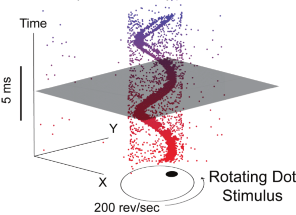
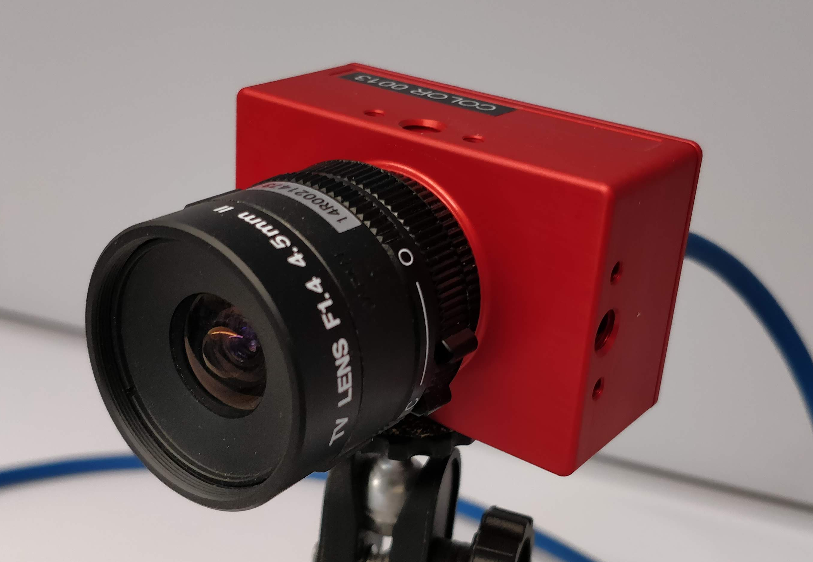
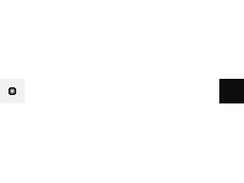
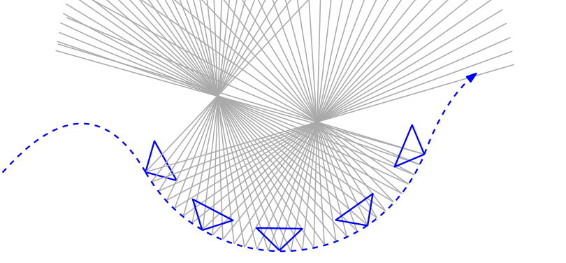
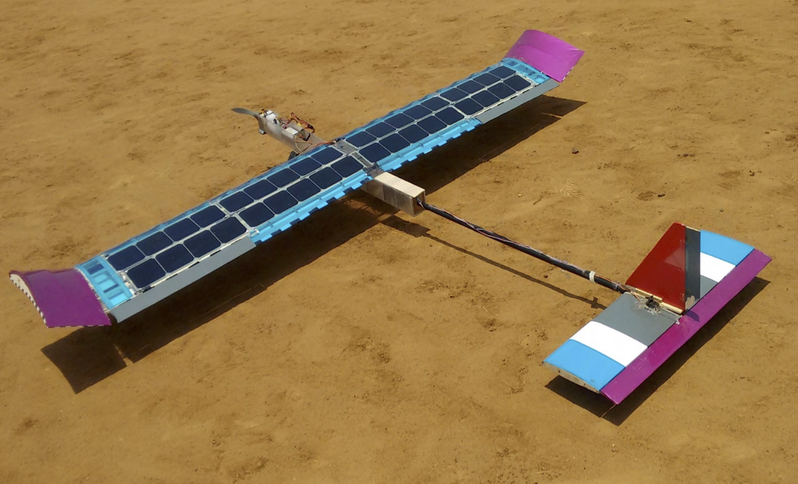
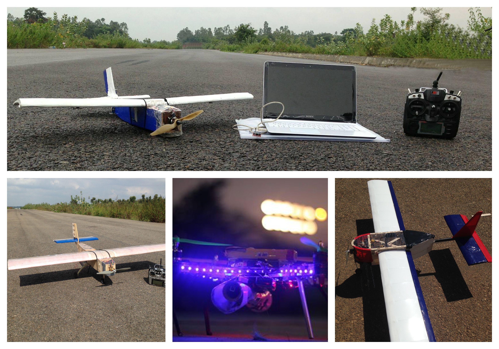
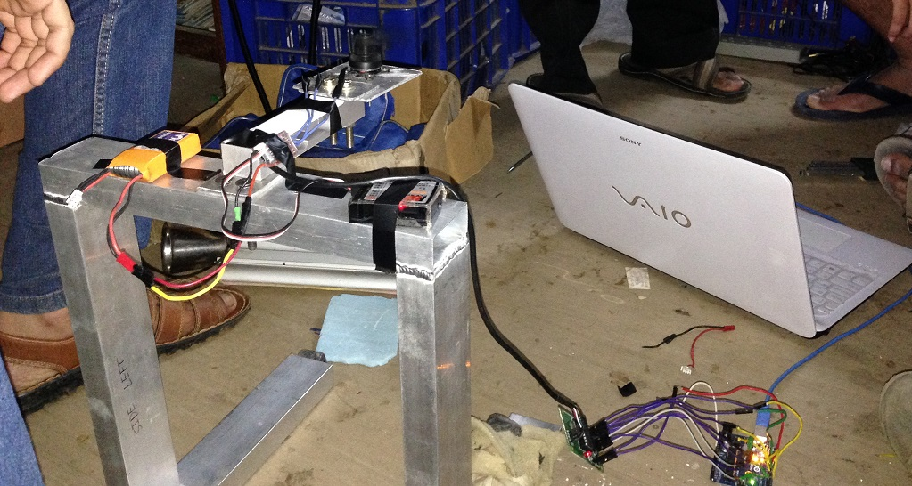
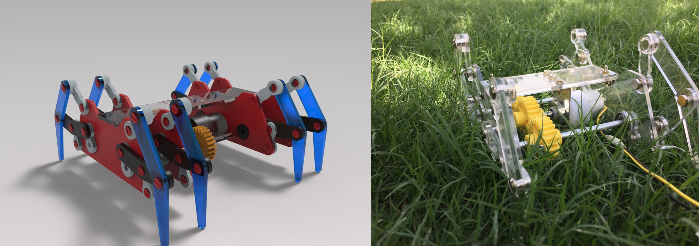
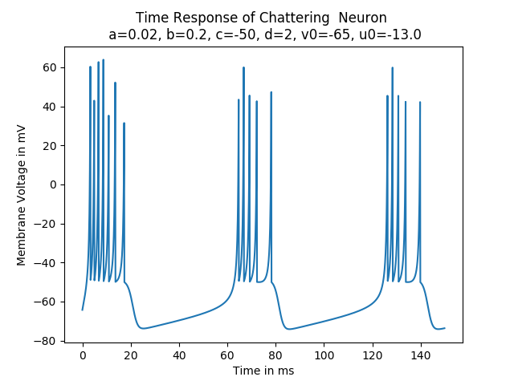
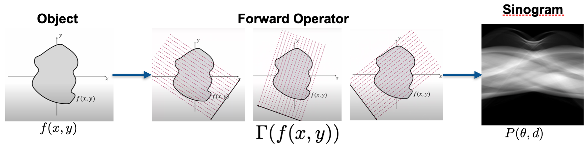

Forget Computer Vision as you know it and get ready to meet Event Cameras. Currently, a lot of new paradigms for visual sensing are being explored and event cameras happen to be one of them. Numerous application have been gaining traction over the years. You can read more about the cutting edge here. During my time at the Indian Insitute of Science as a project assistant, I'd worked on some interesting problems in Event based vision. Below is the work I have done during that period.
Neuromorphic Sampling
 Data from a neuromorphic vision sensor is sparse and non uniformly sampled. Under what conditions would perfect reconstruction be possible. This project aims to simulate a few toy experiments to answer that question. A bare bones event simulator is also available here.
You can follow the project hereMC3D: Motion Contrast 3D
 Line Scanning methods have been around since years to perform 3-D reconstructions of objects. Would doing this with an event camera make the process any better? This research was done by the computational photography group at the Northwestern University. The paper has been implemented in the repository for this project.
Line Scanning methods have been around since years to perform 3-D reconstructions of objects. Would doing this with an event camera make the process any better? This research was done by the computational photography group at the Northwestern University. The paper has been implemented in the repository for this project.
EMVS: Event Based Multi View Stereo
 Backprojection based methods have been around for 3-D reconstruction. Turns out event cameras work very well for this problem giving semi-dense 3-D reconstructions. An attempt to implement the EMVS paper was made here. The paper has been implemented in the repository for this project.
You can follow the project here During my time in the aerodesign club of RVCE, Bengaluru, me along with my team worked on various projects related to drones, unmanned arial vehicles and systems. Listed below is a collection of a few of these works
During my time in the aerodesign club of RVCE, Bengaluru, me along with my team worked on various projects related to drones, unmanned arial vehicles and systems. Listed below is a collection of a few of these works
Solar Plane
 As a team, we set out to design and fabricate an solar plane in 2015. The availability of flexible solar panels at decreasing prices inspired us to go ahead with this endeavor. I was involved in the preliminary conceptual design and feasibility study.
You can read the report hereQuadrotors and Fixed Wing Vehicles: Lots of Em!
 Making Quadrotors, Breaking Quads, Making fixed wings, Breaking fixed wings. Pretty much summed up all our time at the team. We designed and fabricated UAVs during our time at Project Vyoma. We also used the Quadrotors we built to capture photos and videos of our college fest and drop small payloads (it was fancy in those times). We also tried automating our fixed wings and quadrotors.
Thrust Rig
 Put a propeller and a powerful motor together and we have massive thrust. The question was "how massive?". Using a load cell and a microcontroller, we built a glorified weighing machine, a.k.a. The Thrust Rig.
DBF: Design/Build/Fly 2015
 A worldwide competition to the find the fixed wing UAV that rules them all. Our team entered the 2015 competition as debutants. We had a decent 40th place finish among a 100 teams.
A worldwide competition to the find the fixed wing UAV that rules them all. Our team entered the 2015 competition as debutants. We had a decent 40th place finish among a 100 teams.
Sparkfun AVC 2015
We'd been automating UAVs, both fixed wing and rotary wing, and then we decided why not rc cars? We entered the Sparkfun AVC 2015 and came 4th in the Peloton class with our entry
Robotic Crab using Klann Mechanism Design
 We designed and built a robotic crab from scrath based on the Klann Mechanism. By setting the stride length and Stride height and following the rules of the Klann Diagram, we were able to achieve appropriate linkage lengths and that spidery gait!
You can go through the design presentation here and watch it in action here.Spiking Neurons: LIF and Izhikevich
 Spiking Neural Networks - and what's the smallest unit of one, a Spiking Neuron. Implementation of the Leaky Integrate and Fire Neuron and the Izhikevich Neuron are available in this repo.
You can follow the project here
Implementations of Proximal Operators and ISTA in ELSA: A Tomographic Reconstruction Framework
 ELSA is a C++ library developed at the Computational Imaging and Inverse Problems group at the Department of Informatics, Technische Universität München. My contribution was the design, implementation and testing of Proximity Operators, Soft-thresholding, LASSO problem and the ISTA solver.
You can follow the project here